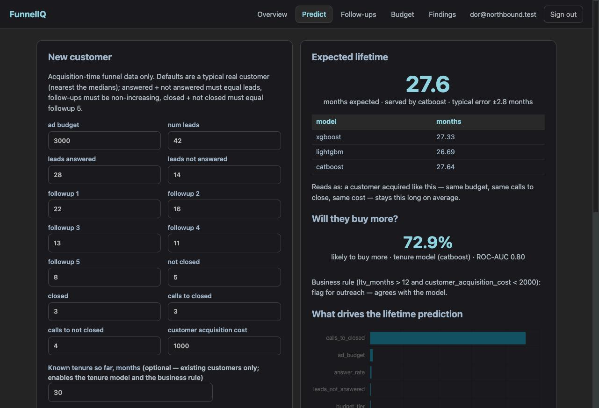

M4: מי צפוי לקנות עוד?
חבילה 3 של הברייף: שלושה מסווגים ל-upsell, בדיקת איזון מחלקות והחלטה מנומקת, כל המדדים לצד baseline של "תמיד לא", ושתי גרסאות פיצ'רים. ובסוף, השוואה הוגנת מול הכלל הפשוט מהברייף, שהסתיימה בתוצאה לא מחמיאה למודל, ומדווחת כמו שהיא.
בשפה פשוטה
אימנו מודלים שינחשו מי מהלקוחות יקנה שירותים נוספים. הפעם התשובה פחות "נקייה" מהוותק: המודל הטוב ביותר מזהה 86% מהקונים, אבל אחד מכל שלושה שהוא מסמן לא קונה בסוף. הופתענו לגלות שכלל פשוט בשני מספרים, "ותק מעל 12 חודשים ועלות רכישה מתחת ל-₪2,000", מנצח את המודל במעט. זו לא כישלון של המודל; זה מידע חשוב למייסד: לרשימת פנייה ללקוחות קיימים לא צריך למידת מכונה, ולמי שנחתם היום, כשעדיין אין ותק, המודל הוא הכלי היחיד.
המודלים מול ה-baseline מול הכלל (לקוחות בלבד, n = 3,163, stratified 5-fold)
| גרסה / מודל | דיוק | precision | recall | F1 | ROC-AUC |
|---|---|---|---|---|---|
| baseline: המחלקה הרוב ("לא") | 53.6% | — | 0 | 0 | 0.500 |
| early / XGBoost | 74.4% | 0.687 | 0.824 | 0.749 | 0.775 |
| early / LightGBM | 73.1% | 0.678 | 0.799 | 0.734 | 0.772 |
| early / CatBoost | 74.8% | 0.690 | 0.832 | 0.754 | 0.778 |
| tenure / XGBoost | 76.3% | 0.702 | 0.849 | 0.768 | 0.788 |
| tenure / LightGBM | 74.9% | 0.693 | 0.825 | 0.753 | 0.786 |
| tenure / CatBoost (מוגש) | 76.4% | 0.700 | 0.859 | 0.771 | 0.795 |
| הכלל העסקי: LTV > 12 וגם CAC < 2,000 | 77.9% | 0.713 | 0.876 | 0.786 | — |
הכלל כוונן על folds האימון ונמדד על folds הבדיקה, בדיוק כמו המודלים; לא הייתה לו גישה למידע שלמודל אין.
ארבע השאלות של הברייף
1. האם דיוק הוא מדד מספיק? לא.
ה-baseline מגיע ל-53.6% דיוק בלי לסמן אף אחד (recall 0, F1 0). המודל מוסיף כ-23 נקודות דיוק, אבל המספרים שחשובים לרשימת פנייה הם precision ו-recall: המודל המוגש מוצא 86% מהקונים ב-70% דיוק סימון. ROC-AUC (0.795) הוא המבט שלא תלוי בסף.
2. מה ה-baseline נותן, וכמה המודל מוסיף?
F1 מ-0 ל-0.771; AUC מ-0.5 ל-0.795. גם גרסת early בלי ותק (F1 0.754) הרבה מעל ה-baseline.
3. פיצ'ר אחד או שילוב?
שילוב. בניגוד לוותק, אף פיצ'ר לא שולט: ב-early: calls_to_closed 0.23, customer_acquisition_cost 0.10, conversion_rate 0.10, answer_rate 0.09. כשמותר להשתמש בוותק: ltv_months 0.32 ואז CAC 0.11. ה-upsell עוקב אחרי אותן מדרגות של שיחות-עד-סגירה (74% ב-1 שיחה, 6% ב-7) ואחרי ה-tier (Mid 69% מול ~21%), אבל עלות הרכישה ושיעור ההמרה מוסיפים אות אמיתי.
4. הכלל העסקי מול המודל: איפה כל אחד מנצח?
| tier | n | שיעור upsell | מודל F1 / recall | כלל F1 / recall |
|---|---|---|---|---|
| Low | 571 | 21% | 0.685 / 0.623 | 0.708 / 0.656 |
| Mid | 1,640 | 69% | 0.814 / 0.966 | 0.827 / 0.990 |
| High | 952 | 22% | 0.490 / 0.408 | 0.489 / 0.379 |
הכלל מנצח ב-Low וב-Mid ותיקו ב-High. שניהם חלשים ב-High (F1 ~0.49): לקוחות יקרים שקונים עוד הם המקרה הקשה. היתרונות של המודל נמצאים במקום אחר: הוא מדרג לפי הסתברות (הכלל רק כן/לא), הוא עובד ביום החתימה בלי ותק, והוא ישרוד אם הספים יזוזו.
D-M4-1 · הוותק מותר, ורק כאן
פנייה ל-upsell נעשית ללקוח קיים, ובאותו רגע הצוות יודע כמה זמן הוא כבר לקוח. זה מידע מהעבר, לא מהעתיד, ולכן עומד בעיקרון של דור ("אסור שלמודל יהיה מידע עתידי"). ltv_months רשום במפורש כיוצא מן הכלל היחיד ב-ALLOWED_OUTCOMES, רק לגרסת tenure. הגרסה early קיימת ליום החתימה.
D-M4-2 · scale_pos_weight נשמר, בהסתייגות
46/54 הוא כמעט מאוזן. משקל 1.16 העלה את F1 של XGBoost מ-0.741 ל-0.749, מעל הרף שהוצהר מראש (+0.005), ולכן נשמר. אבל האפקט זניח, וההחלטה לא הייתה שורדת בביטחון seed אחר. כתוב כך גם ב-REPORT.
המלצה למייסד
ללקוחות קיימים: הכלל "ותק מעל 12 חודשים ועלות רכישה מתחת ל-₪2,000" כרשימת פנייה ברירת-מחדל. פשוט, שקוף, ולא נופל מהמודל. ללקוחות חדשים ביום החתימה: המודל early, שמדרג לפי הסתברות ולא צריך ותק. לבדוק מחדש אם מבנה ה-tiers או ה-CAC ישתנה.
מה חי באתר
POST /api/predict/upsell: עם ותק ידוע מפעיל את גרסת tenure ומחזיר גם את פסק-הדין של הכלל; בלי ותק נופל אוטומטית ל-early ואומר זאת. בלשונית Predict נוסף שדה "ותק ידוע" אופציונלי; לשונית Findings מציגה את הטבלה המלאה מול ה-baseline ומול הכלל, ופירוט לפי tier.

הדוגמה בצילום: הלקוח הטיפוסי (Mid, 3 שיחות, CAC ₪1,000) עם ותק 30 חודשים: 72.9% "צפוי לקנות עוד", והכלל מסכים.
הקשחת אבטחה בתחנה הזו: אחרי בדיקות הקצה, ה-API דורש עכשיו במפורש שה-role בטוקן יהיה authenticated; טוקן service או anon נדחה על-פי מדיניות ולא רק בגלל אלגוריתם לא מוגדר. נוסף scripts/smoke_live.py לבדיקות קצה חוזרות.
תוצאת השער
- עבר · pytest ירוק (63 בדיקות).
- עבר · ruff נקי.
- עבר · metrics.json: 2 גרסאות × 3 מסווגים עם כל המדדים וקבצי joblib.
- עבר · המודל המוגש מעל ה-baseline ב-F1, ו-ROC-AUC > 0.55.
- עבר · הכלל העסקי כוונן, נמדד, והושווה לפי tier.
- עבר · REPORT.md §P3 עונה על ארבע השאלות.
- עבר ·
POST /api/predict/upsellחי מחזיר 200 עם הסתברות ופסק-דין של הכלל.
לקח מתודולוגי
כשמשווים מודל לכלל, הכלל חייב לקבל את אותו טיפול: כוונון על folds האימון, מדידה על folds הבדיקה, אותם folds. אחרת "המודל ניצח" הוא תוצאה של השוואה לא הוגנת. כאן ההשוואה ההוגנת אמרה את ההפך, וזה בדיוק סוג הממצא שמייסד צריך לשמוע.
הבא בתור: M5, ציון ה-super customer
CatBoost עם budget_tier קטגורי (טיפול נייטיבי), חיפוש היפר-פרמטרים (learning rate × depth × iterations, 18 קונפיגורציות), ציון 0–100 חי, ופרופיל ה-super customers: איזה נתח מהרווח הם, כמה עלה להשיג אותם, ואיך לזהות אותם מוקדם.